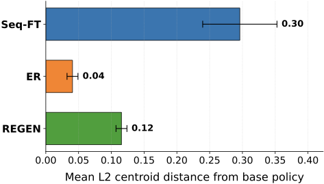
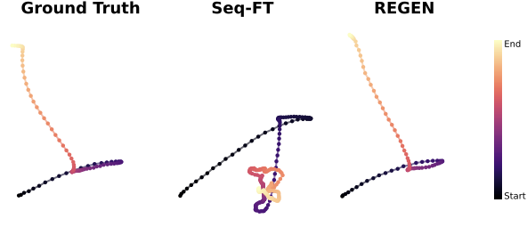

Going beyond predicting robot actions, World Action Models (WAMs) can also generate future visual observations. We build on this generative capability to propose Recurrent Generative Replay (REGEN), a continual imitation learning framework that synthesizes pseudo-replay trajectories, enabling a robot policy to rehearse previously learned tasks without storing their original human demonstrations. During continual adaptation, REGEN recursively queries the WAM to synthesize pseudo-replay trajectories conditioned only on prior task instructions and current-task observations. Experiments in both simulation and real-world manipulation settings show that REGEN reduces catastrophic forgetting by up to 50% relative to sequential fine-tuning, while approaching the performance of privileged experience replay methods that require access to real replay data. Finally, we analyze the factors limiting generated replay, identifying long-horizon visual degradation and action-observation inconsistency as the primary bottlenecks. Our results establish WAMs as a promising foundation for continual robot learning without stored demonstrations.
TL;DR: REGEN leverages World Action Model's own generative capabilities to synthesize pseudo-demonstrations of previous tasks, eliminating the need for any stored replay buffer while substantially reducing catastrophic forgetting.
REGEN operates by leveraging a pretrained World Action Model (WAM) as its own replay mechanism. When adapting to a new task, REGEN generates pseudo-demonstrations for each previous task by conditioning the WAM on the prior task's language instruction and initializing the rollout from a real observation sampled from the current task's demonstrations.
REGEN involves two phases. First, an initialization phase seeds the rollout with one real action chunk from the current task. Second, a recurrent generation phase takes over: the model's own predicted future observations are fed back as inputs, producing a fully synthetic trajectory without any stored data. Generation terminates either at a maximum horizon or goal reward function is satisfied.
The resulting pseudo-trajectories are combined with the current task's demonstrations and used to fine-tune the policy via behavioral cloning. This allows the WAM to simultaneously acquire new skills and retain knowledge previously learned ones, using only its own generative replay as memory without storing the original demonstrations.
REGEN synthesizes pseudo-demonstrations for previously learned tasks by recursively rolling out the WAM itself. These generated trajectories are then used as replays during continual learning adaptation.
Turn on the stove
Put the bowl on the plate
Push plate to front of stove
Pick the tomato sauce and place it in the basket
Pick black bowl on ramekin and place it on the plate
Put the carrot in the bowl
Put the carrot on the plate
Pick up the black bowl next to plate and place it on the plate
We evaluate REGEN on three LIBERO benchmark suites against Sequential Fine-Tuning (Seq-FT), Seq-LoRA, Experience Replay (ER, upper bound), EWC, PackNet, and Rollouts-as-Replay (RAR). Higher FWT and AUC are better; lower NBT is better.
| Method | LIBERO-Object | LIBERO-Goal | ||||
|---|---|---|---|---|---|---|
| FWT ↑ | NBT ↓ | AUC ↑ | FWT ↑ | NBT ↓ | AUC ↑ | |
| Seq-FT | 92.7 | 82.6 | 24.9 | 90.6 | 100 | 10.3 |
| Seq-LoRA | 93.5 | 99.9 | 11.1 | 83 | 99.6 | 9.3 |
| EWC | 94.9 | 87.5 | 25.1 | 83.6 | 99.4 | 9.9 |
| PackNet | 95.5 | 99.7 | 11.5 | 92 | 100 | 10.5 |
| ER | 95.7 | 4.8 | 93.4 | 94.0 | 7.2 | 92.4 |
| RAR | 96.9 | 3.0 | 95.2 | 92.8 | 15.4 | 82.6 |
| REGEN (Ours) | 95.3 | 26.1 | 65.5 | 90.6 | 44.9 | 40.8 |
| Method | LIBERO-Spatial | ||
|---|---|---|---|
| FWT ↑ | NBT ↓ | AUC ↑ | |
| Seq-FT | 87.4 | 99.8 | 10.8 |
| Seq-LoRA | 80 | 99.6 | 8.9 |
| EWC | 86.4 | 99.9 | 10.3 |
| PackNet | 87.2 | 100 | 10.4 |
| ER | 86.4 | -0.28 | 87.8 |
| RAR | 87 | -0.02 | 85.8 |
| REGEN (Ours)† | 87.2 | 17.6 | 76.9 |
† uses object configurations sampled from previous tasks during replay generation.
We evaluate continual learning performance of REGEN in real-world environment across three sequential pick-and-place tasks: Put carrot in bowl (T1), Put carrot on plate (T2), and Put eggplant in bowl (T3).
| Method | FWT ↑ | NBT ↓ | AUC ↑ |
|---|---|---|---|
| Seq-FT | 50 | 96.3 | 13.8 |
| Ours (REGEN) | 80 | 60.5 | 53.8 |
After adapting to a new task, we evaluate the updated policy on a previously learned task. Seq-FT policy on the previous task demonstrates catastrophic forgetting by executing the current task instead or failing to accomplish the previous task. Policy learned by REGEN successfully performs the previous task, retaining task-relevant behavior.
New Task
Seq-FT
REGEN (Ours)
Task: Open the middle drawer of the cabinet
New Task
Seq-FT
REGEN (Ours)
Task: Pick up the cream cheese and place it in the basket
New Task
Seq-FT
REGEN (Ours)
Task: Pick up the black bowl on the ramekin and place it on the plate
New Task
Seq-FT
REGEN (Ours)
Task: Pick up the carrot and place it in the plate
We further analyze how REGEN preserves the policy's internal representations and behaviors throughout continual learning.

Action representation drift

XY-projection of trajectories
Action representation drift. After the first continual learning stage, action representations under Seq-FT drift heavily from the base policy, consistent with catastrophic forgetting, while ER and REGEN keep representations close to the base, despite REGEN using only generated pseudo-trajectories.
Visualization of predicted actions. On a previously learned task, Seq-FT rollouts deviate sharply from ground-truth trajectories in the XY plane, while REGEN closely matches ground-truth in both shape and temporal progression.
@misc{govind2026worldactionmodelsenable,
title={World Action Models Enable Continual Imitation Learning with Recurrent Generative Replays},
author={Manish Kumar Govind and Dominick Reilly and Smit Patel and Hieu Le and Srijan Das},
year={2026},
eprint={2606.27374},
archivePrefix={arXiv},
primaryClass={cs.RO},
url={https://arxiv.org/abs/2606.27374},
}